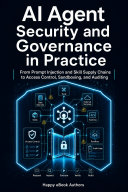

AI Agent Security and Governance in Practice
From Prompt Injection and Skill Supply Chains to Access Control, Sandboxing, and Auditing

AI Agent Security and Governance in Practice
From Prompt Injection and Skill Supply Chains to Access Control, Sandboxing, and Auditing
An AI agent does more than generate text. It can read files, call tools, modify systems, and send data beyond the organization. Once model output can change real systems, security must extend beyond prompts and model behavior. This practical guide shows engineering, security, operations, and governance teams how to design agent workflows around assets, risks, enforceable controls, and acceptance evidence. It covers prompt injection, MCP and Skill supply chains, least privilege, credential protection, sandboxing, human approval, memory poisoning, audit trails, incident response, and red-team testing. Six enterprise scenarios, ready-to-use governance templates, hands-on labs, and a 60-item release checklist turn abstract policy into operating discipline.